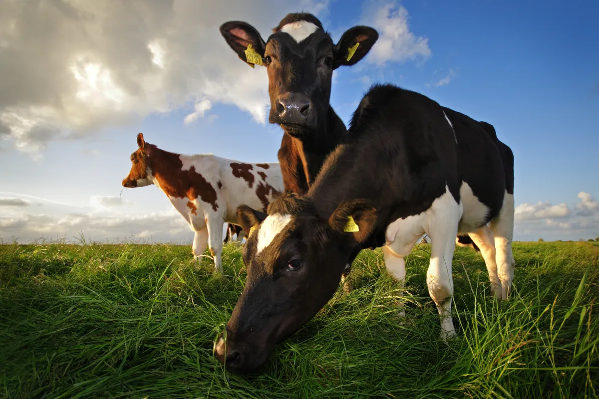
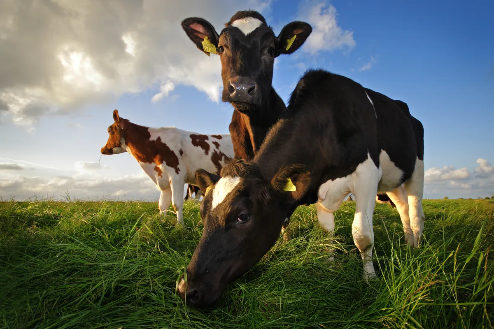

Misión
Satisfacemos las necesidades de alimentación de nuestros clientes comercializando productos nutritivos, inocuos
y
saludables, elaborados con la más alta calidad y cuidado del medio ambiente, fortaleciendo el crecimiento y el
desarrollo del país.


 
